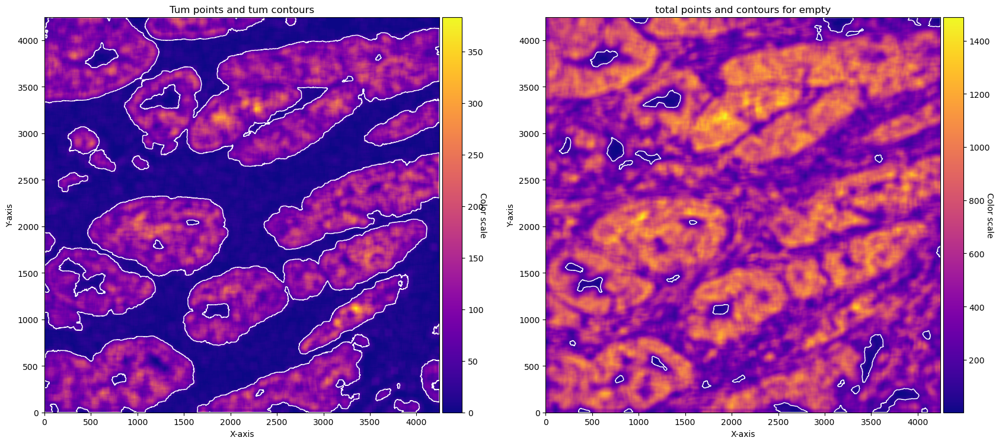
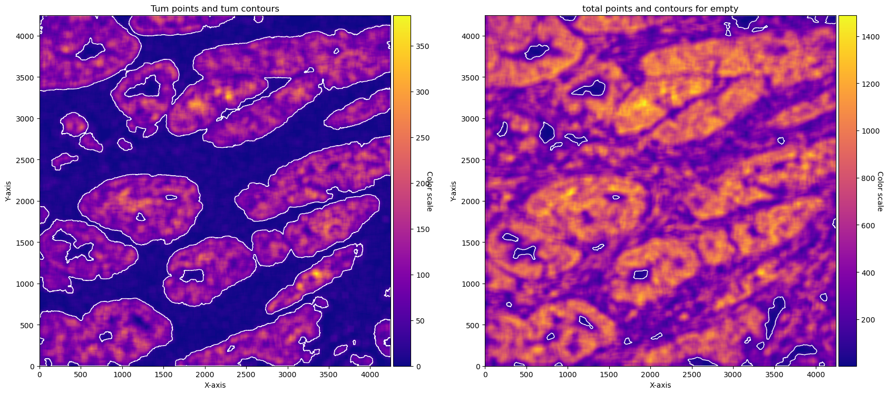

Derive cancer and stroma masks in CosMx data#
%load_ext autoreload
import os
import sys
import time
import logging
import re
from tqdm import tqdm
import pandas as pd
import numpy as np
import matplotlib.pyplot as plt
from PIL import Image
from natsort import natsorted
import cv2
import numpy as np
from PIL import Image
import tifffile as tiff
import copy
sys.path.append(os.path.dirname(os.getcwd()))
from src import get_arrays as ga
from src import contours
from src import masks
from src.mask_properties import GetMasksProperties
# define the logger : can be None, and is set to INFO
# Custom logger setup
logger = logging.getLogger('contour_logger')
handler = logging.StreamHandler()
formatter = logging.Formatter('%(asctime)s - %(name)s - %(levelname)s - %(message)s')
handler.setFormatter(formatter)
logger.addHandler(handler)
logger.setLevel(logging.INFO)
Cosmx Data#
Resolution 1 px = 125 nm = 0.125 um 1 um = 8 px
Transcripts -> 999 + system and negative controls
standard panel (not custom made)
CRC cohort
cosmx_path_s0 = '../../cosmx_data/S0/S0/20230628_151317_S4/AnalysisResults/iz38iruwno'
folder_names_s0 = [folder_name for folder_name in os.listdir(cosmx_path_s0) if
os.path.isdir(os.path.join(cosmx_path_s0, folder_name))]
target_files_s0 = [
os.path.join(cosmx_path_s0, folder, file)
for folder in os.listdir(cosmx_path_s0)
if os.path.isdir(os.path.join(cosmx_path_s0, folder))
for file in os.listdir(os.path.join(cosmx_path_s0, folder))
if '__target_call_coord.csv' in file
]
files_names = natsorted(target_files_s0)
files_cosmx = copy.deepcopy(files_names)
# files_names
Let’s open one file to see how it looks like
file_csv = files_names[0] # 5
print(file_csv)
df_total = pd.read_csv(file_csv)
df_total['X'] = (round(df_total['x'])).astype(int)
df_total['Y'] = (round(df_total['y'])).astype(int)
print('max x', max(df_total['x']))
print('max y', max(df_total['y']))
print('rounded max x', max(df_total['X']))
print('rounded max y', max(df_total['Y']))
print('df shape', df_total.shape)
print('df columns', df_total.columns)
df_total['target'].value_counts()
../../cosmx_data/S0/S0/20230628_151317_S4/AnalysisResults/iz38iruwno/FOV001/Run_69de8227-1a7b-40ee-ba46-0ea99a7c59f4_FOV001__target_call_coord.csv
max x 4245.27
max y 4245.32
rounded max x 4245
rounded max y 4245
df shape (1843019, 22)
df columns Index(['Unnamed: 0', 'Spot1_count', 'Spot2_count', 'Spot3_count',
'Spot4_count', 'codeclass', 'fov', 'multicolor_spots_per_feature',
'possible_BC_count', 'random_call_probability', 'seed_x', 'seed_y',
'spots_per_feature', 'target', 'target_call_observations',
'target_count_per_feature', 'target_idx', 'x', 'y', 'z', 'X', 'Y'],
dtype='object')
target
MALAT1 110996
TPT1 67199
KRT8 48690
RPL37 46842
KRT18 41968
...
SystemControl194 7
SystemControl10 6
SystemControl107 4
SystemControl70 3
SystemControl134 2
Name: count, Length: 1207, dtype: int64
Remove the negative controls. We get 999 genes and shape (4245,4245)
# remove Controls
df_total = df_total[~df_total['target'].str.contains('System|egative')]
n_genes = len(df_total['target'].unique())
height = max(df_total['X'] + 1)
width = max(df_total['Y'] + 1)
print(f'n genes: {n_genes}')
print(f'shape: {height}, {width}')
print(f'n hits {len(df_total)}')
n genes: 999
shape: 4246, 4246
n hits 1819904
Define GRIDGEN parameters and obtain arrays
target_tum = ['EPCAM', 'KRT19', 'KRT8', 'KRT18','KRT17','CEACAM6','SPINK1', 'CD24', 'S100A6','RPL37','S100P',]
# param tum
density_th_tum = 40
min_area_th_tum = 1000
kernel_size_tum = 80
# param empty
density_th_empty = 140
min_area_th_empty = 2000
kernel_size_empty = 80
# this makes the sparse df to an array with the spatial information
target_dict_total = {target: index for index, target in enumerate(df_total['target'].unique())}
array_total = ga.transform_df_to_array(df = df_total, target_dict=target_dict_total, array_shape = (height, width,len(target_dict_total))).astype(np.int8)
# creating subsets
df_subset_tum, array_subset_tum, target_indices_subset_tum = ga.get_subset_arrays(df_total, array_total,target_dict_total,
target_list=target_tum, target_col = 'target')
We are set to go! Lets get the contours:
Contours for the cancer regions using the cancer trasncripts.
Contours around the regions that have tissue (emptiness) using all the transcripts available.
We will plot the results with the graphics available in GRIDGEN:
contours scatter - where each transcript point of that region is blue and the contour is red.
conv sum - plot with the convolutional sum image ( densities on each kernel).
# obtain contours
CTum = contours.ConvolutionContours(array_subset_tum, contour_name='tum')
CTum.get_conv_sum(kernel_size=kernel_size_tum, kernel_shape='square')
CTum.contours_from_sum(density_threshold = density_th_tum,
min_area_threshold = min_area_th_tum , directionality = 'higher')
print('==== tumour ====')
print('total contours found ', CTum.total_valid_contours)
print('total contours after filtering by area', CTum.contours_filtered_area)
CEmpty = contours.ConvolutionContours(array_total, contour_name='empty')
CEmpty.get_conv_sum(kernel_size=kernel_size_empty, kernel_shape='square')
CEmpty.contours_from_sum(density_threshold = density_th_empty,
min_area_threshold = min_area_th_empty, directionality = 'lower') # attention that directionality is lower here
print('====')
print('total contours found ', CEmpty.total_valid_contours)
print('total contours after filtering by area', CEmpty.contours_filtered_area)
# PLOTs -- instead of plotting just with the function for example: CTum.plot_contours_scatter, we will make a composite image
fig, axs = plt.subplots(1, 2, figsize=(20, 10))
CTum.plot_contours_scatter(path=None, show=False, s=0.05, alpha=0.5, linewidth=1,
c_points= 'blue',c_contours= 'red', ax=axs[0])
axs[0].set_title('Tum points and tum contours')
CEmpty.plot_contours_scatter(path=None, show=False, s=0.05, alpha=0.5, linewidth=1,
c_points= 'blue',c_contours= 'red', ax=axs[1])
axs[0].set_title('total points and contours for empty')
plt.subplots_adjust(wspace=0.02) # Adjust to your preference
plt.show()
fig, axs = plt.subplots(1, 2, figsize=(20, 10))
CTum.plot_conv_sum(cmap='plasma', c_countour='white', ax=axs[0])
axs[0].set_title('Tum points and tum contours')
CEmpty.plot_conv_sum(cmap='plasma', c_countour='white', ax=axs[1])
axs[1].set_title('total points and contours for empty')
plt.show()
Function 'get_conv_sum' took 0.5181 seconds to execute.
Function 'contours_from_sum' took 31.6562 seconds to execute.
==== tumour ====
total contours found 917
total contours after filtering by area 35
Function 'get_conv_sum' took 7.3329 seconds to execute.
Function 'contours_from_sum' took 12.7785 seconds to execute.
====
total contours found 177
total contours after filtering by area 35
 

With the contours made. We can make the masks. cancer masks will be equivalent to the cancer contours. Stroma masks will be the total tissue contours without the cancer areas.
Some operations can be done to get smoother masks. In the example below, holes in tumour masks are filled. This is optional.
#### obtain masks
GM = masks.GetMasks(image_shape = (height, width))
mask_empty = GM.create_mask(CEmpty.contours)
mask_tum = GM.create_mask(CTum.contours)
mask_tum = GM.fill_holes(mask_tum)
mask_stroma = GM.subtract_masks(np.ones((height, width), dtype=np.uint8), mask_tum, mask_empty)
mask_stroma = GM.filter_mask_by_area(mask_stroma, min_area=700)
# general masks
GM.mask_S = mask_stroma
GM.mask_T = mask_tum
GM.plot_masks(masks=[GM.mask_S, GM.mask_T], mask_names=['Stroma', 'Tumour'],
background_color=(1, 1, 1), mask_colors={'Stroma': (65, 105, 225), 'Tumour': (255, 165, 0)},
path=None, show=True, ax=None, figsize=(5, 6))
Just as an example, We will overlay this mask with the immunofluorescent image. In the IF image tumour is coloured with DAPI blue, cancer with red and the remaining memabranes with green. In yellow stroma contours and in white cancer contours.
It’s pssible to see a very good overlap between regions. discrepancies may be due to problems in the imaging and the non complete alignment as the IF and the CosMx are made on consecutive slides.
mask1 = GM.mask_S
mask2 = GM.mask_T
image = tiff.imread('composites/20230628_151317_S4_C902_P99_N99_F001_composite.tiff')
# Calculate the padding needed on each side
pad_y = (image.shape[1] - mask1.shape[1]) // 2
pad_x = (image.shape[0] - mask1.shape[0]) // 2
# Pad the mask with 5 pixels on each side to match the image size
# Here, we assume a binary mask, so we pad with 0s
mask1 = np.pad(mask1, ((pad_y, pad_y), (pad_x, pad_x)), mode='constant', constant_values=0)
mask2 = np.pad(mask2, ((pad_y, pad_y), (pad_x, pad_x)), mode='constant', constant_values=0)
# mask1 = np.flip(mask1, axis = 0)
mask1 = np.transpose(mask1)
mask2 = np.transpose(mask2)
image = (image * 255).astype(np.uint8)
# Create a copy of the image to overlay borders
image_with_contours = image.copy()
# Find contours for each mask
contours1, _ = cv2.findContours(mask1.astype(np.uint8), cv2.RETR_EXTERNAL, cv2.CHAIN_APPROX_SIMPLE)
contours2, _ = cv2.findContours(mask2.astype(np.uint8), cv2.RETR_EXTERNAL, cv2.CHAIN_APPROX_SIMPLE)
# Define colors for each mask's contours (Yellow for mask1, Cyan for mask2)
contour_color1 = (255, 255, 0) # Yellow
contour_color2 = (255, 255, 255) # Cyan
# Draw the contours on the image
cv2.drawContours(image_with_contours, contours1, -1, contour_color1, thickness=2)
cv2.drawContours(image_with_contours, contours2, -1, contour_color2, thickness=2)
# Plot the image with contours
plt.figure(figsize=(6, 6)) # Increase the figure size to make it larger
plt.imshow(image_with_contours)
plt.axis('off') # Hide axes for cleaner visualization
plt.show()

Finally, we can wrap the pipleine in a function and apply it to the full cohort.
def do_cosmx_pipeline(file_csv):
df_total = pd.read_csv(file_csv)
df_total['X'] = (round(df_total['x'])).astype(int)
df_total['Y'] = (round(df_total['y'])).astype(int)
n_genes = len(df_total['target'].unique())
height = max(df_total['X'] + 1)
width = max(df_total['Y'] + 1)
# this makes the sparse df to an array with the spatial information
target_dict_total = {target: index for index, target in enumerate(df_total['target'].unique())}
array_total = ga.transform_df_to_array(df = df_total, target_dict=target_dict_total, array_shape = (height, width,len(target_dict_total))).astype(np.int8)
# creating subsets
df_subset_tum, array_subset_tum, target_indices_subset_tum = ga.get_subset_arrays(df_total, array_total,target_dict_total,
target_list=target_tum, target_col = 'target')
# obtain contours
CTum = contours.ConvolutionContours(array_subset_tum, contour_name='tum')
CTum.get_conv_sum(kernel_size=kernel_size_tum, kernel_shape='square')
CTum.contours_from_sum(density_threshold = density_th_tum,
min_area_threshold = min_area_th_tum , directionality = 'higher')
print('==== tumour ====')
print('total contours found ', CTum.total_valid_contours)
print('total contours after filtering by area', CTum.contours_filtered_area)
CEmpty = contours.ConvolutionContours(array_total, contour_name='empty')
CEmpty.get_conv_sum(kernel_size=kernel_size_empty, kernel_shape='square')
CEmpty.contours_from_sum(density_threshold = density_th_empty,
min_area_threshold = min_area_th_empty, directionality = 'lower') # attention that directionality is lower here
print('====')
print('total contours found ', CEmpty.total_valid_contours)
print('total contours after filtering by area', CEmpty.contours_filtered_area)
# PLOTs -- instead of plotting just with the function for example: CTum.plot_contours_scatter, we will make a composite image
fig, axs = plt.subplots(1, 2, figsize=(16, 8))
CTum.plot_contours_scatter(path=None, show=False, s=0.05, alpha=0.5, linewidth=1,
c_points= 'blue',c_contours= 'red', ax=axs[0])
axs[0].set_title('Tum points and tum contours')
CEmpty.plot_contours_scatter(path=None, show=False, s=0.05, alpha=0.5, linewidth=1,
c_points= 'blue',c_contours= 'red', ax=axs[1])
axs[0].set_title('total points and contours for empty')
plt.subplots_adjust(wspace=0.02) # Adjust to your preference
plt.show()
#### obtain masks
GM = masks.GetMasks(image_shape = (height, width))
mask_empty = GM.create_mask(CEmpty.contours)
mask_tum = GM.create_mask(CTum.contours)
mask_tum = GM.fill_holes(mask_tum)
mask_stroma = GM.subtract_masks(np.ones((height, width), dtype=np.uint8), mask_tum, mask_empty)
mask_stroma = GM.filter_mask_by_area(mask_stroma, min_area=700)
# general masks
GM.mask_S = mask_stroma
GM.mask_T = mask_tum
GM.plot_masks(masks=[GM.mask_S, GM.mask_T], mask_names=['Stroma', 'Tumour'],
background_color=(1, 1, 1), mask_colors={'Stroma': (65, 105, 225), 'Tumour': (255, 165, 0)},
path=None, show=True, ax=None, figsize=(6, 6))
%%time
for file_csv in tqdm(files_names[:10]):
do_cosmx_pipeline(file_csv)
0%| | 0/10 [00:00<?, ?it/s]